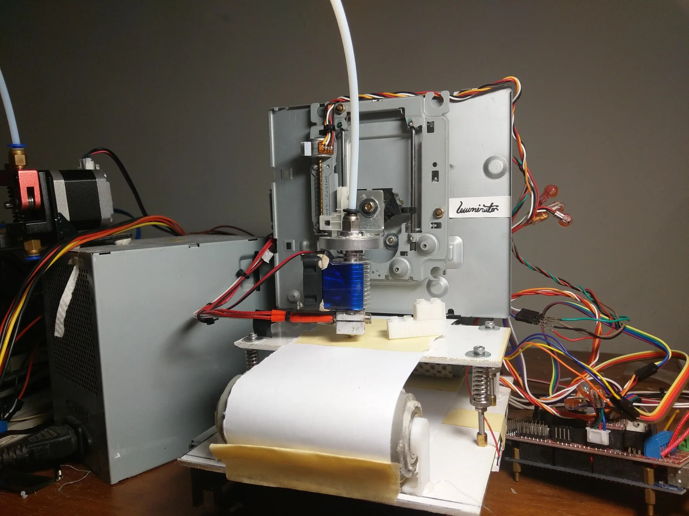

Project Illuminator
A working FDM 3D printer built from the corpses of scrapped optical drives, for under NT$2,000 — then given a conveyor bed so it could eject its own prints and start the next job unattended.

Why build one at all
In 2018 I was a student in the electronics department of a vocational high school, and owning a 3D printer was out of reach — the cheap machines still cost more than a student could justify. What I did have access to was a steady supply of dead computers, because the school threw them away.
I had seen people convert a scrapped optical drive into a small laser engraver. The laser pickup inside every CD or DVD drive rides on a precision sled driven by a stepper motor: it is, already, a finished linear axis with the hard engineering done. If two of those give you X and Y, then adding a third for Z and hanging a plastic extruder off it gets you a 3D printer.
Where it actually started: the pen plotter
Before the printer there was a plotter. Two salvaged sleds, a pen held in a wooden block, and paper taped to a scrap of MDF. It had no Z axis worth the name and it could only draw, but it proved out the part I was least sure of — that drive sleds could be driven accurately enough by G-code to produce something recognisable.
One plot took fifty-two minutes and came out as a stippled portrait of Einstein. That was the moment the rest of the project became obviously possible.
Turning it into a printer
The finished machine is three stepper modules and an extruder. X and Z are optical-drive laser sleds, used essentially as they came out of the drive. The structure is the drive chassis plates themselves — already flat, already stiff, already drilled, and free. Power comes from an ATX supply pulled out of a scrapped desktop, which conveniently provides the 12 V the heater and steppers want.
Control is an Arduino Mega with a RAMPS 1.4 shield running Repetier firmware, driven from Repetier-Host on a PC. Choosing the standard open-source stack was deliberate: it meant the parts of the problem that were already solved — slicing, motion planning, thermal control — stayed solved, and I could spend the time on the mechanical work that was actually specific to this machine.
MANUStar: making the Y axis do something else
The obvious complaint about the first machine was the same one every hobby printer has: it prints one thing, then stops and waits for a human to come and take it off the bed. For a machine this small, the waiting is most of the total time.
So the second revision replaced the Y axis entirely. Instead of a moving platform, the bed became a paper belt running between two rollers, one of them driven by the Y stepper. During a print the belt indexes back and forth like a normal Y axis. When the print finishes, the belt keeps going, the part rolls off the end, and the next job starts on clean bed surface.
The same motor, the same driver, the same axis in the firmware — one mechanism doing two jobs. It cost nothing to add, which was the whole point.
This version was entered as Eco-friendly Automated 3D Printing System, and it is the one that made the project feel finished rather than merely working.
What it printed
Not fast, and not fine — the build volume is roughly the footprint of the drives it is made of. But it printed real parts in PLA: mechanical bits, test geometry, and the inevitable useless box. Side by side with commercial entry-level machines of the time, the output was closer than the ten-fold price difference suggested.
Where it went
- National Senior High School Special Topic & Creative Project Competition — Electrical & Electronic Engineering group, creative division. Entered two years running, the second year as the automated conveyor version.
- National High School Creative Invention Competition (hosted by Far East University of Technology) — entered as Illuminator: a 3D printer made from scrapped optical drive parts.
What I took from it
Ten months of evenings, and most of them were spent on problems that do not appear anywhere in a build log: getting a salvaged sled to hold position under load, keeping a belt tracking straight, finding out that the first extruder design simply could not push filament hard enough. The failures were the education.
The conclusion I still carry is the one in the competition write-up: the expensive part of most products is the packaging, not the capability. If you are willing to do the integration yourself, a surprising amount of capability is already lying in the bin.